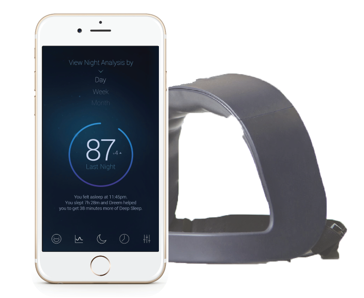
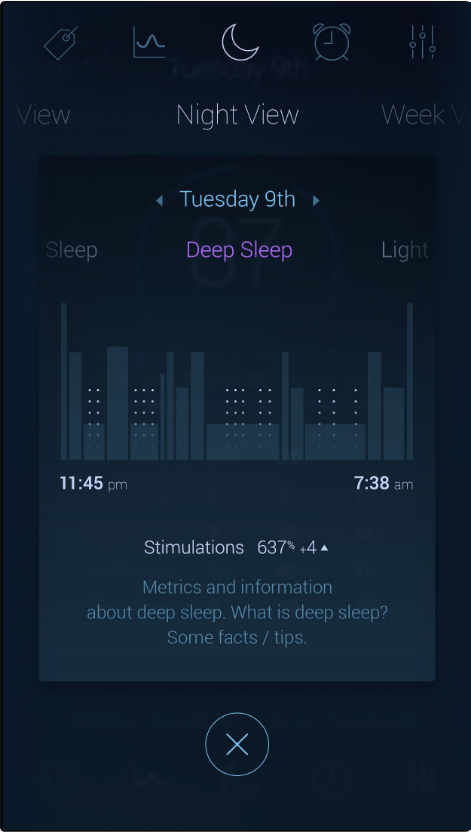
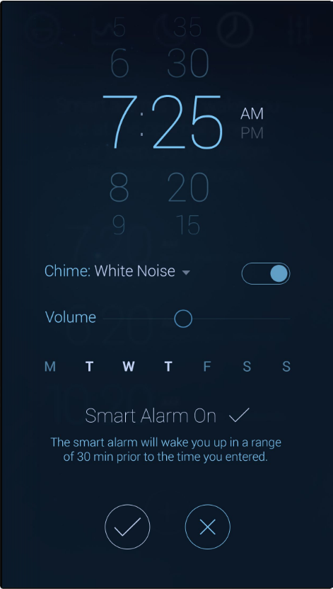

<link rel="import" href="../../bower_components/polymer/polymer.html">
<link rel="import" href="../../bower_components/iron-flex-layout/iron-flex-layout.html">
<link rel="import" href="../../bower_components/neon-animation/neon-animatable.html">
<link rel="import" href="../../bower_components/neon-animation/neon-animated-pages.html">
<link rel="import" href="../../bower_components/neon-animation/neon-animations.html">
<link rel="import" href="../../bower_components/paper-button/paper-button.html">
<link rel="import" href="../../bower_components/paper-icon-button/paper-icon-button.html">
<link rel="import" href="../../bower_components/paper-material/paper-material.html">
<link rel="import" href="../../bower_components/paper-scroll-header-panel/paper-scroll-header-panel.html">
<link rel="import" href="../../bower_components/paper-styles/color.html">
<link rel="import" href="../../bower_components/paper-tabs/paper-tabs.html">
<link rel="import" href="../../bower_components/paper-toolbar/paper-toolbar.html">
<link rel="import" href="../style-elements/style-elements.html">
<link rel="stylesheet" href="https://fonts.googleapis.com/css?family=Lato|Oswald">


<dom-module id="rythm-redesign-app">
  <template>
    <style include="style-elements"></style>
    <style>:host { display: block; height: 100%;}</style>
    <paper-scroll-header-panel condenses condensed-header-height="100">
      <!-- Top Menu Bar -->
      <paper-toolbar class="tall">
        <paper-icon-button class="long" src="../assets/rythm_logo.png"></paper-icon-button>
        <span class="title"></span>
        <paper-tabs selected="0" noink>
          <paper-tab>Home</paper-tab>
          <paper-tab>About</paper-tab>
          <paper-tab>Order Now</paper-tab>
          <paper-tab>Science</paper-tab>
          <paper-tab>Blog</paper-tab>
        </paper-tabs>
      </paper-toolbar>

      <content>
        <!-- Landing section -->
        <section id="landing-section">
          <paper-material id="pickup-line" elevation="1">
            <h1>You've Finally Found a Good Night's Sleep</h1>
            <h2>Introducing the Dreem headband</h2>
          </paper-material>
        </section>  

        <section id="product-section">
          <!-- Product description -->
          <paper-material id="app-description" elevation="0">
            <p>Understanding your sleep accurately is the first step towards enhancing it. And the most accurate way to understand sleep is by measuring one’s brain activity (EEG). The Dreem headband acquires and analyzes this activity and our Dreem App gives you a meaningful and clear understanding of your sleep when you wake up.</p>
            <p>Your everyday performance has a lot to do with getting the right quality of sleep so that you wake up recovered, rested, and full of energy. By using sound stimulations at precise moments that sync with your brain activity, we enhance the quality of your sleep during the most critical stage of your sleep - deep sleep.</p>
            <p>Knowing your precise sleep patterns means you’ll never be interrupted during any of your key sleep stages. Your Dreem headband does this exceptionally well.Just set your alarm time and leave it to the headband to gently wake you up at the ideal time. A time that is in tune with your body so that you wake up refreshed and charged for another day.</p>
          </paper-material>
          <!-- App demo -->
          <div id="product">
            <div id="phone-container">
              
              <!-- Div scaled to exact size of image (to allow for phone #screen positioning) -->
              <div id="product-photo-frame">
                <!-- These arrows overflow the parent, but this allows the arrows to be centered on the phone screen -->
                <div id="arrows">
                  <paper-icon-button id="arrow-left" src="../assets/left-arrow.png" title="left" class="giant" on-tap="goLeft"></paper-icon-button>
                  <paper-icon-button id="arrow-right" src="../assets/right-arrow.png" title="right" class="giant" on-tap="goRight"></paper-icon-button>
                </div>
                <div id="phone-screen">
                  <!-- This does the heavy lifting for animating the phone screens -->
                  <neon-animated-pages class="phone-screen-content" selected="[[screenSelected]]" entry-animation="[[screenEntryAnimation]]" exit-animation="[[screenExitAnimation]]">
                    <neon-animatable></neon-animatable>
                    <neon-animatable></neon-animatable>
                    <neon-animatable></neon-animatable>
                  </neon-animated-pages>
                </div>
              </div>
            </div>
          </div>
        </section>  

        <section id="endorsement-section">
          <div id="endorsements">
            <paper-material id="endorsement-backdrop" elevation="1"></paper-material>
            <!-- Press icons -->
            <div id="endorsement-container">
              
              
              
              
              
            </div>
          </div>
        </section> 

        <section id="footer"></section>

      </content> 
    </paper-scroll-header-panel> 
  </template>

  <script>
    Polymer({

      is: 'rythm-redesign-app',

      properties: {
        screenSelected: {
          type: Number,
          value: 2,
          notify: true,
        },
        screenEntryAnimation: String,
        screenExitAnimation: String,
      },

      // Phone screen animations. 
      // Direction of "swipe" depends on arrow pressed
      goLeft: function() {
        this.screenEntryAnimation = 'slide-from-left-animation';
        this.screenExitAnimation = 'slide-right-animation';
        this.screenSelected = this.screenSelected === 0 ? 2 : (this.screenSelected - 1);
      },
      goRight: function() {
        this.screenEntryAnimation = 'slide-from-right-animation';
        this.screenExitAnimation = 'slide-left-animation';
        this.screenSelected = this.screenSelected === 2 ? 0 : (this.screenSelected + 1);
      },

    });
  </script>
</dom-module>